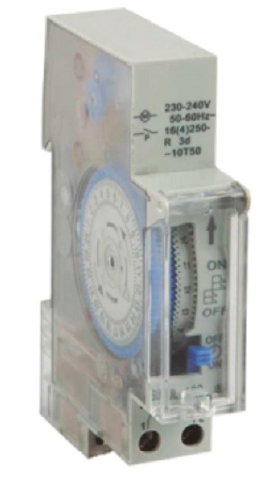

Cuando una empresa decide reducir su impacto ambiental, además de seguir los consejos que se han dado en el apartado anterior sobre el reciclaje y el uso razonable de los dispositivos electrónicos, esa de reducir el consumo energético. Eso no quiere decir no utilizar la electricidad, sino utilizarla de una manera justa y razonable.
Mucha de la energía eléctrica que se consume en el mundo proviene de combustibles fósiles como carbón y petróleo, responsables de la generación de CO2 a la atmósfera. También de la energía nuclear que, como todo el mundo sabe, genera residuos radiactivos. El consumo de electricidad, por lo tanto, empeora el
efecto invernadero y genera residuos, con lo cual una reducción en su uso podría beneficiar al medioambiente.
7. Cómo reducir el impacto ambiental de la informática
Para saber más
Minería de criptomonedas y gasto energético
Existen muchos estudios que calculan que el minado de bitcoins u otras criptomonedas tiene un gasto energético muy alto. De hecho, minar bitcoins ya es una opción solamente para los grandes centros de cálculo.
El minado consiste en introducir números aleatorios y realizar una serie de cálculos (cálculos hash, que consisten en obtener un número a partir de otro número inicial). Este tipo de operaciones complejas
solamente se podía realizar de forma eficiente con equipos muy potentes con varias tarjetas gráficas trabajando en paralelo.
No obstante, esta forma de minado se abandonó sobre el 2013 y se comenzó a utilizar ASIC (Application Specific Integrated Circuit) o circuitos integrados para aplicaciones específicas. Un tipo de chip que incluye microprocesador, ROM, RAM, memoria flash y otros componentes. Un ASIC es una especie de SoC, con la única diferencia que está construido para un fin específico, mientras que un SoC normal está construido para realizar cualquier tipo de tarea.
Muchas de estas granjas de minado, al necesitar mucha energía, se empezaron a establecer en lugares donde la energía era muy barata como China o Singapur, o cerca de centrales hidroeléctricas como Islandia.
La capacidad de cálculo de estas granjas de minado es tal que, para que un ordenador doméstico genere y selle un bloque, necesitaría miles o millones de años.
Resumiendo: "el gasto energético que requiere minar un bitcoin es superior al precio del propio bitcoin. A eso hay que añadirle el coste del propio equipo destinado al minado."
A continuación se dan una serie de consejos para un uso racional de la informática:
1. Pocos equipos a mucho rendimiento consumen menos que muchos equipos rindiendo poco. Por lo tanto, es mejor concentrar varios servidores en uno solo, aunque sea más potente. Para ello se pueden utilizar máquinas virtuales o servicios de virtualización como VMWare, VirtualBox, Proxmox, etc.
2. Desconectar periféricos que no se vayan a utilizar como las impresoras, altavoces, escáneres, etc. Recuerda que aunque estén en standby tienen consumo.
3. Utilizar las técnicas de ahorro de energía a tu alcance. Salvapantallas negro (que es el que menos consume), configuración para que los equipos que pasado un tiempo estén sin actividad se queden en standby, etc. Muchos equipos ya vienen equipados de fábrica con software que realiza estas acciones de forma automática.
4. Utilizar regletas con interruptor y, al finalizar la jornada, apagarlo. De esa manera, cualquier equipo conectado a la misma se apagará en ese momento y no se quedará encendido.
5. Otro consejo: un equipo apagado consume menos que cualquier equipo encendido. Para ello se puede utilizar software o los servicios de apagado automático cuando el equipo o dispositivo no se va a utilizar.
Sabías que...
El gasto vampiro es todo el gasto que se produce simplemente por tener enchufado un dispositivo a la corriente sin utilizarse. Los que conocemos como el standby o espera.

Este gasto, en España, por ejemplo, es del 2,3 %. Un gasto nada desdeñable.
Hay dispositivos que consumen más que otros en standby como pueden ser los monitores, los ordenadores de sobremesa (no los portátiles, que están más optimizados), las impresoras, etc.
Reducir este gasto ahorra dinero y es beneficioso para el medioambiente. Además, ese gasto no está produciendo ningún beneficio, todo lo contrario.
Los Estados están legislando para reducirlo, aunque los límites impuestos no parece que vayan a acabar con el consumo superfluo. El lema erróneo es que un dispositivo apagado no consume.
6. Un equipo optimizado consume menos que otro que no lo está. Un equipo con mucho software inútil que no se utiliza o con muchos servicios a los que no se les da uso, consumirá más que un equipo perfectamente optimizado.
7. Comprar equipos de bajo consumo y más eficientes. Por ejemplo, los portátiles consumen menos que un equipo de sobremesa y, dentro de estos, la fuente de alimentación es uno de los dispositivos que puede llegar a bajar más el consumo del ordenador. Una fuente eficiente, aunque sea más cara, consume menos y puede llegar a rentabilizarse con el tiempo ese desembolso extra.
Para saber más
Los fabricantes de dispositivos electrónicos actualmente están intentando crear dispositivos que consuman poco para alargar la vida de las baterías.
Algunos dispositivos tienen coprocesadores que descargan al procesador de muchas tareas en aras de la eficiencia. Estos coprocesadores especializados realizan el trabajo de forma más eficiente, consumiendo
menos energía que el mismo procesador.
8. No utilizar equipos obsoletos como servidores. Precisamente, los equipos antiguos son menos eficientes y tenerlos encendidos un número grande de horas hará que se consuma más energía.
9. Cerrar las aplicaciones que se estén utilizando en segundo plano y que no se vayan a utilizar más. Estas aplicaciones consumen recursos y, por lo tanto, energía.
10. Utilizar programadores para apagar las regletas o incluso los cuadros eléctricos. De esa manera, se automatizan los apagados y se asegura tener todos los equipos sin consumo cuando la oficina está cerrada, por ejemplo.
11. Utilizar impresoras multifuncionales es mejor que tener por separado una impresora, un escáner, un fax y una fotocopiadora.
12. Evitar el consumo de papel. Salvo que sea imprescindible, mejor trabajar sobre texto digital, ya que se genera más gasto energético en producir una hoja de papel que en imprimirla. Y aunque se recicle, es siempre mejor no utilizarla si no es necesario. Si hay que imprimir, que sea a doble cara.

13. Los dispositivos USB son mucho más eficientes que un dispositivo conectado a la red. No solamente es porque los dispositivos USB están diseñados para consumir poco, sino porque al añadir un transformador más, siempre se van a producir pérdidas de energía, dado que el propio transformador no tiene una eficiencia del 100 %.
Recomendación
Según ADEME (la agencia francesa del medioambiente) un portátil puede consumir entre un 50 % y un 85 % menos de energía que un equipo sobremesa. Además, gracias a la reducción de la tecnología de fabricación, los componentes electrónicos cada vez consumen menos energía, con lo cual el ahorro energético sube y las emisiones de CO2 a la atmósfera se van reduciendo.
En los próximos años se estima que, debido a la miniaturización, los portátiles seguirán consumiendo unas diez veces menos electricidad que un equipo de sobremesa.
A la hora de elegir un dispositivo reducido, es fundamental elegir uno que esté mejor refrigerado o que utilice materiales termoconductores como el aluminio y no el plástico, puesto que de esta forma la batería se calentará mucho menos y su vida se alargará reduciendo las recargas y el consumo.
Obra publicada con Licencia Creative Commons Reconocimiento Compartir igual 4.0